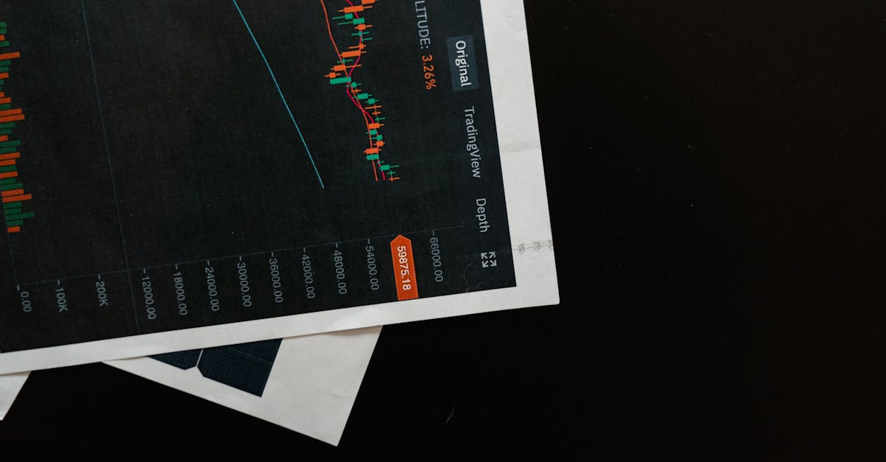

Une Acquisition Monumentale Redessine l'Industrie
L'annonce a fait l'effet d'une décharge électrique sur les marchés financiers et dans le secteur de la construction verticale : Kone, le géant finlandais des ascenseurs et escaliers mécaniques, a officialisé l'acquisition de TK Elevator pour la somme astronomique de 34,4 milliards de dollars, dette comprise. Cette transaction, d'une ampleur rare dans l'industrie, ne se contente pas de déplacer quelques pions sur l'échiquier mondial ; elle le redéfinit entièrement. Elle propulse Kone au rang de leader incontesté, créant un mastodonte dont la taille et la portée géographique mettront une pression inédite sur ses concurrents historiques, tels qu'Otis et Schindler. C'est une opération qui, par son volume et ses implications stratégiques, mérite une analyse approfondie pour tout investisseur attentif aux dynamiques de marché.
👉 À lire : Norwood Financial : Fusion Gagnante et Marges Boostées dès 2026
Le secteur des ascenseurs, souvent perçu comme stable et mature, est en réalité un pilier discret mais essentiel de l'urbanisation mondiale. Avec l'augmentation constante des populations urbaines et la construction de gratte-ciel toujours plus hauts, la demande pour des solutions de mobilité verticale ne cesse de croître. Cette acquisition intervient à un moment où la digitalisation et la maintenance prédictive transforment également cette industrie. L'intégration de TK Elevator par Kone n'est donc pas seulement une question de volume, mais aussi de convergence technologique et de consolidation de l'expertise. Les implications pour les portefeuilles d'investissement, qu'ils soient axés sur les actions individuelles, les ETF sectoriels ou les indices boursiers mondiaux, sont considérables et nécessitent une lecture fine des signaux envoyés par cette méga-fusion. Comment une telle opération peut-elle influencer les valorisations futures et les stratégies d'investissement ?
👉 À lire : OppFi rachète BNCCORP: Que cachent les 130M$?
L'enjeu est de taille : il ne s'agit pas seulement d'additionner des parts de marché, mais de créer une entité capable de dicter les nouvelles normes de l'industrie, d'accélérer l'innovation et d'optimiser les coûts à une échelle jamais atteinte. Les analystes de Bloomberg, avec Liana Baker en tête, ont souligné la transformation radicale que cette acquisition représente pour Kone. Elle passe du statut de concurrent majeur à celui de leader hégémonique, ce qui pourrait avoir des répercussions bien au-delà du seul secteur des ascenseurs, impactant potentiellement les indices industriels et les fonds thématiques axés sur les infrastructures ou la smart city. Comprendre les rouages de cette fusion est donc crucial pour anticiper les mouvements de marché et positionner judicieusement ses investissements.
Les Acteurs Clés : Profils et Positions Stratégiques
Pour saisir pleinement la portée de cette acquisition, il est impératif de se pencher sur les profils des deux protagonistes : Kone et TK Elevator. Kone, entreprise finlandaise fondée en 1910, est depuis longtemps un acteur majeur du secteur. Réputée pour son innovation, notamment dans l'efficacité énergétique de ses ascenseurs et ses solutions de maintenance intelligentes, Kone s'est forgée une solide réputation de qualité et de fiabilité. Sa présence est forte en Europe et en Asie, avec une attention particulière portée aux marchés émergents à forte croissance. L'entreprise a toujours misé sur une approche centrée sur le client et une excellence opérationnelle, ce qui lui a permis de maintenir une croissance constante et une rentabilité enviable dans un marché concurrentiel.
De l'autre côté, nous avons TK Elevator, anciennement la division ascenseurs de ThyssenKrupp, le conglomérat industriel allemand. TK Elevator est un acteur global, avec une forte empreinte en Amérique du Nord et du Sud, ainsi qu'une présence significative en Europe et en Asie. L'entreprise est connue pour son portefeuille de produits diversifié, allant des ascenseurs résidentiels aux solutions complexes pour gratte-ciel, et pour son vaste réseau de services de maintenance. Ayant été récemment séparée de sa maison mère, TK Elevator était dans une phase de transformation, cherchant à optimiser ses opérations et à renforcer son positionnement indépendant. Cette scission avait déjà attiré l'attention des investisseurs, car elle révélait la valeur intrinsèque d'une entité auparavant masquée au sein d'un conglomérat.
La complémentarité géographique et technologique entre les deux entreprises est frappante. Tandis que Kone excelle dans l'innovation et l'efficacité, TK Elevator apporte une base installée massive et une forte présence sur des marchés où Kone pouvait encore consolider sa position. « C'est une synergie de titans, » comme l'a si bien dit un analyste financier fictif lors d'une conférence privée. « Kone gagne une portée géographique inégalée, tandis que TK Elevator bénéficie de la puissance d'innovation d'un leader. » Cette fusion n'est pas une simple acquisition de capacité, mais un mariage stratégique de forces vives, visant à créer une entité supérieure à la somme de ses parties. Pour les investisseurs, cette alliance promet une diversification des risques et des opportunités de croissance dans des régions du monde en plein essor, des éléments que des outils d'analyse basés sur l'IA pourraient rapidement identifier et valoriser.
La Logique Stratégique Derrière le Deal : Pourquoi Maintenant ?
Pourquoi une telle opération maintenant, et surtout, pourquoi une valorisation si élevée ? La logique stratégique derrière l'acquisition de TK Elevator par Kone est multifactorielle et profondément ancrée dans les dynamiques actuelles du marché mondial des ascenseurs. Premièrement, il y a la quête de la domination du marché. En combinant leurs opérations, Kone et TK Elevator dépassent leurs rivaux directs en termes de parts de marché, de base installée et de chiffre d'affaires. Cette position de leader offre des avantages concurrentiels considérables, notamment en matière de pouvoir de négociation avec les fournisseurs, d'optimisation des coûts de production et de distribution, et de capacité à investir massivement dans la recherche et le développement.
Deuxièmement, la synergie géographique est un moteur essentiel. Comme mentionné précédemment, les forces de Kone et de TK Elevator se complètent géographiquement. Kone renforce sa présence dans des marchés clés où TK Elevator est bien établie, notamment en Amérique du Nord, un marché mature mais très lucratif pour les services de maintenance. Inversement, TK Elevator bénéficie de l'accès aux réseaux de Kone dans les marchés asiatiques à forte croissance. Cette expansion géographique permet au nouvel ensemble de desservir une clientèle mondiale avec une efficacité accrue, réduisant les coûts logistiques et administratifs. « C'est une carte du monde redessinée pour le service, » a commenté un observateur du secteur. « Moins de chevauchements, plus de couverture. »
Enfin, l'innovation et la technologie jouent un rôle prépondérant. L'industrie des ascenseurs est à l'aube d'une révolution numérique, avec l'émergence des ascenseurs connectés (IoT), de la maintenance prédictive, de la personnalisation de l'expérience utilisateur et de l'intégration de l'intelligence artificielle pour optimiser le trafic. En combinant leurs expertises R&D, Kone et TK Elevator peuvent accélérer le développement de ces technologies de pointe. Cela leur permettra de proposer des solutions plus intelligentes, plus efficaces et plus durables, répondant aux exigences croissantes des villes modernes et des bâtiments intelligents. Pour les investisseurs, cette convergence technologique est un indicateur clé de la capacité de l'entreprise fusionnée à générer une croissance future et à maintenir sa compétitivité sur le long terme, un facteur que les algorithmes d'IA peuvent analyser en profondeur pour identifier les opportunités.

Implications Financières et Valorisation à 34,4 Milliards de Dollars
Le chiffre de 34,4 milliards de dollars, incluant la dette, est stupéfiant et soulève naturellement des questions sur la valorisation. Comment une telle somme est-elle justifiée, et quelles sont les implications financières pour Kone et ses actionnaires ? Tout d'abord, il est crucial de comprendre que le marché des ascenseurs est caractérisé par des revenus de maintenance récurrents et très stables, ce qui en fait un secteur attractif pour les investisseurs à long terme. La base installée d'ascenseurs et d'escaliers mécaniques génère un flux de trésorerie prévisible et résilient, même en période de ralentissement économique. TK Elevator apporte une base installée massive, augmentant considérablement ces revenus récurrents pour Kone.
Le financement d'une telle acquisition est complexe et implique généralement un mélange de capitaux propres, de dette et potentiellement d'émissions de nouvelles actions. L'augmentation de la dette de Kone sera un point d'attention pour les agences de notation et les investisseurs. Cependant, la robustesse des flux de trésorerie combinés des deux entités devrait permettre de gérer cet endettement. Les synergies de coûts, estimées à plusieurs centaines de millions d'euros annuellement, joueront un rôle clé dans la justification de cette valorisation. Ces synergies proviendront de l'optimisation des achats, de la rationalisation des opérations, de la consolidation des fonctions administratives et de la réduction des doublons. « C'est le pari sur le potentiel de réduction des coûts et l'augmentation des revenus sur le long terme, » a souligné un expert en fusions-acquisitions.
Du point de vue de la valorisation, les multiples d'acquisition dans le secteur des services industriels peuvent être élevés en raison de la stabilité des revenus et des perspectives de croissance à long terme. L'acquisition de TK Elevator n'est pas seulement l'achat d'actifs physiques, mais aussi d'un portefeuille de contrats de maintenance à forte marge, d'une propriété intellectuelle précieuse et d'une expertise humaine. La prime payée par Kone reflète la conviction que la création de valeur future, grâce aux synergies et à la domination du marché, dépassera largement le coût d'acquisition initial. Pour les investisseurs, l'analyse de ces métriques financières est essentielle. Des plateformes d'IA peuvent aider à modéliser différents scénarios de synergies, d'endettement et de croissance des flux de trésorerie pour évaluer l'impact réel sur la valeur des actions de Kone et sur les ETF sectoriels.
Impact sur le Marché et Pression Concurrentielle Accrue
L'acquisition de TK Elevator par Kone ne manquera pas d'avoir un impact profond et durable sur l'ensemble du marché mondial des ascenseurs et des escaliers mécaniques. En créant un leader incontesté, cette fusion modifie radicalement la dynamique concurrentielle. Les acteurs historiques comme Otis, Schindler et Hitachi se retrouvent désormais face à un concurrent de taille et de portée sans précédent. La pression concurrentielle va s'intensifier, les obligeant à réévaluer leurs propres stratégies d'expansion, d'innovation et d'efficacité opérationnelle. On pourrait assister à une nouvelle vague de consolidation ou à des partenariats stratégiques entre les acteurs restants pour tenter de rivaliser avec le nouvel ensemble Kone-TK Elevator.
Cette consolidation pourrait également avoir des répercussions sur les prix et les services. Un acteur dominant a potentiellement plus de latitude pour influencer les conditions du marché. Cependant, l'industrie reste compétitive, et l'innovation constante est nécessaire pour maintenir sa position. Les clients, qu'il s'agisse de promoteurs immobiliers ou de gestionnaires de bâtiments, pourraient bénéficier d'une offre plus intégrée et technologiquement avancée, mais ils devront aussi rester vigilants quant à la concentration du marché. « Le jeu n'est pas terminé, mais les règles viennent d'être réécrites, » a souligné une voix influente du secteur lors d'un récent webinaire. « Ceux qui ne s'adaptent pas rapidement risquent d'être marginalisés. »
Sur le plan réglementaire, une acquisition de cette envergure attire inévitablement l'attention des autorités anti-trust mondiales. Les régulateurs devront examiner attentivement l'impact de cette fusion sur la concurrence dans les différentes régions et segments de marché. Des cessions d'actifs mineures pourraient être exigées dans certaines zones pour garantir un niveau de concurrence suffisant. Cependant, compte tenu de la nature fragmentée du marché mondial des ascenseurs et de la présence de plusieurs autres acteurs majeurs, il est probable que l'opération soit approuvée, moyennant quelques ajustements. Pour les investisseurs suivant des indices boursiers, ces dynamiques sectorielles sont cruciales. L'IA peut analyser les rapports réglementaires et les déclarations des concurrents pour anticiper les ajustements de portefeuille nécessaires face à une nouvelle structure de marché.

Vision à Long Terme : Innovation et Croissance Future
Au-delà de la simple consolidation des parts de marché, l'acquisition de TK Elevator par Kone est également un pari audacieux sur l'avenir de l'industrie et sur le potentiel d'innovation. La vision à long terme de l'entité combinée semble se concentrer sur plusieurs axes stratégiques majeurs. Le premier est l'accélération de la digitalisation. Les ascenseurs intelligents, connectés à l'Internet des Objets (IoT), capables de collecter des données en temps réel pour la maintenance prédictive et l'optimisation du trafic, sont l'avenir. En unissant leurs forces, Kone et TK Elevator peuvent investir davantage dans ces technologies, mutualiser leurs plateformes et développer des solutions encore plus sophistiquées.
Un autre axe crucial est la durabilité. L'efficacité énergétique des ascenseurs est devenue un critère essentiel pour les bâtiments modernes, soucieux de leur empreinte carbone. Le nouvel ensemble aura la capacité d'innover dans des technologies plus vertes, des matériaux plus légers et des systèmes de récupération d'énergie plus performants. Cela répond non seulement à une demande croissante des clients, mais positionne également l'entreprise comme un leader responsable, ce qui peut avoir un impact positif sur son image de marque et son attrait pour les investisseurs éthiques. « L'innovation n'est plus un luxe, c'est une nécessité pour rester pertinent, » a déclaré un PDG d'une entreprise technologique. « Et dans cette industrie, cela signifie des ascenseurs plus intelligents et plus verts. »
Enfin, la croissance future passera par une offre de services enrichie et personnalisée. Avec une base installée gigantesque, Kone-TK Elevator pourra proposer une gamme de services de maintenance et de modernisation sans précédent, allant de l'optimisation des performances à la personnalisation de l'expérience utilisateur (écrans interactifs, reconnaissance faciale, etc.). Cette diversification des revenus au-delà de la simple vente d'équipements est une stratégie clé pour assurer une croissance stable et rentable sur le long terme. Pour les investisseurs, identifier les entreprises qui investissent dans ces mégatendances (digitalisation, durabilité, services) est essentiel, et l'IA peut filtrer et analyser des milliers de rapports d'entreprise pour déceler ces opportunités avant qu'elles ne soient largement reconnues par le marché.
Perspective d'Investisseur : Opportunités et Risques Post-Fusion
Pour l'investisseur avisé, l'acquisition de TK Elevator par Kone présente un mélange complexe d'opportunités et de risques. Du côté des opportunités, la création d'un leader mondial incontesté offre un potentiel de croissance stable et à long terme. La taille accrue de l'entreprise lui confère des avantages d'échelle, une meilleure capacité de négociation et une résilience accrue face aux chocs économiques. Les synergies de coûts et de revenus devraient se traduire par une amélioration des marges et une augmentation des bénéfices par action à moyen terme, ce qui est généralement bien perçu par le marché. Les investisseurs dans les actions de Kone pourraient voir leur participation valorisée à mesure que les synergies se matérialisent et que l'entreprise démontre sa capacité à intégrer efficacement TK Elevator.
De plus, l'exposition à un marché mondialisé et en croissance, soutenu par l'urbanisation et la modernisation des infrastructures, rend le secteur des ascenseurs intrinsèquement attractif. Les ETF axés sur l'industrie, les infrastructures ou les mégatendances urbaines pourraient également bénéficier de la vigueur renouvelée de ce secteur. La capacité du nouvel ensemble à innover dans les ascenseurs intelligents et durables pourrait également attirer des capitaux de fonds ESG (Environnemental, Social et Gouvernance), augmentant ainsi la demande pour le titre. « C'est une histoire de croissance à long terme, mais avec des fondations solides, » a commenté un gestionnaire de fonds spécialisé dans l'industrie.
Cependant, les risques ne sont pas négligeables. L'intégration d'une entreprise de cette taille est une tâche colossale, semée d'embûches. Les défis peuvent inclure des différences culturelles, des problèmes de compatibilité des systèmes informatiques, la rétention des talents clés et d'éventuels retards dans la réalisation des synergies annoncées. Un endettement accru pour financer l'acquisition peut également peser sur les performances financières à court terme et rendre l'entreprise plus vulnérable en cas de hausse des taux d'intérêt ou de ralentissement économique. Enfin, l'examen réglementaire, bien que probablement résolu, peut toujours introduire des incertitudes. Les investisseurs doivent surveiller attentivement ces facteurs. Un copilote IA pourrait analyser en temps réel les annonces de l'entreprise, les rapports d'intégration et les indicateurs macroéconomiques pour évaluer la trajectoire de l'investissement et ajuster les stratégies en conséquence.
Le Rôle de l'IA dans l'Analyse de Mégatransactions
Dans le monde complexe et rapide des fusions-acquisitions, où des milliards de dollars changent de mains et où les dynamiques de marché sont en perpétuelle évolution, l'intelligence artificielle (IA) devient un outil indispensable pour les investisseurs. L'acquisition de TK Elevator par Kone est un cas d'étude parfait pour illustrer comment l'IA peut offrir un avantage concurrentiel significatif. Traditionnellement, l'analyse d'une telle transaction repose sur des équipes d'analystes humains, qui passent des semaines à éplucher des rapports financiers, des études de marché et des documents réglementaires. Cependant, la quantité et la complexité des données sont telles qu'une analyse exhaustive dépasse souvent les capacités humaines.
C'est là que l'IA entre en jeu. Un système d'IA avancé peut ingérer et traiter des volumes massifs de données non structurées et structurées en une fraction du temps. Il peut analyser les bilans financiers des deux entreprises, leurs rapports annuels, les communiqués de presse, les articles de presse, les données macroéconomiques, et même les sentiments des médias sociaux. « L'IA ne remplace pas l'intuition humaine, elle l'augmente de manière exponentielle, » a affirmé un expert en fintech lors d'un forum sur l'investissement. « Elle permet de voir des patterns et des corrélations que l'œil humain pourrait manquer. » Par exemple, l'IA pourrait identifier des risques d'intégration culturelle en analysant les communications internes passées, ou des synergies de coûts potentielles non encore publiquement annoncées.
Pour les investisseurs en actions, ETF et indices, l'IA peut modéliser l'impact de la fusion sur la valorisation de Kone, sur les performances des ETF sectoriels (ex: ETF industriels, ETF d'infrastructures) et sur la pondération des indices boursiers où Kone est présente. Elle peut simuler différents scénarios d'intégration, de réalisation des synergies et d'évolution de la dette, fournissant des projections de prix cibles et des niveaux de risque ajustés. En outre, l'IA peut surveiller en temps réel les réactions du marché, les déclarations des concurrents et les décisions réglementaires, alertant l'investisseur sur les opportunités ou les menaces émergentes. Un copilote IA est donc bien plus qu'un simple outil d'information ; c'est un partenaire stratégique capable de décrypter la complexité des mégatransactions et d'optimiser les décisions d'investissement dans un environnement de marché en constante mutation.
Conclusion : Un Nouveau Chapitre pour l'Industrie Verticale
L'acquisition de TK Elevator par Kone pour 34,4 milliards de dollars est bien plus qu'une simple transaction financière ; elle marque le début d'un nouveau chapitre pour l'industrie mondiale des ascenseurs et des escaliers mécaniques. Cette fusion crée un leader incontesté, doté d'une portée géographique inégalée, d'une capacité d'innovation renforcée et d'un potentiel de synergies considérable. Les implications pour les concurrents, les clients et, bien sûr, les investisseurs, sont profondes et méritent une attention continue. Le paysage concurrentiel est redessiné, les standards d'innovation sont rehaussés, et les opportunités d'investissement dans ce secteur stratégique sont à réévaluer.
Pour les investisseurs en actions, ETF et indices, cette méga-fusion souligne l'importance d'une analyse rigoureuse et proactive. Les mouvements de cette ampleur peuvent générer des valeurs importantes, mais aussi des risques non négligeables. La capacité à anticiper les dynamiques d'intégration, à évaluer l'impact des synergies et de l'endettement, et à comprendre les répercussions sur les marchés mondiaux est plus cruciale que jamais. C'est dans ce contexte que des outils sophistiqués, tels que les copilotes IA dédiés au trading, trouvent toute leur pertinence. Ils offrent une capacité d'analyse et de surveillance inégalée, permettant aux investisseurs de naviguer avec confiance dans des eaux financières de plus en plus complexes.
En définitive, l'histoire de Kone et TK Elevator est celle d'une consolidation majeure qui transformera non seulement deux entreprises, mais potentiellement toute une industrie. Le succès de cette intégration dépendra de la capacité de Kone à réaliser les synergies promises, à gérer son nouvel endettement et à maintenir son leadership en matière d'innovation. L'œil vigilant des marchés financiers, amplifié par la puissance analytique de l'IA, suivra chaque étape de cette transformation. Le futur de la mobilité verticale s'écrit aujourd'hui, et les investisseurs avisés, armés des bons outils, sont prêts à en décrypter chaque ligne pour optimiser leurs stratégies.